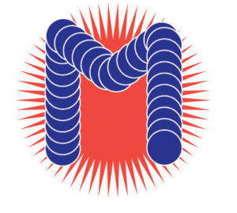
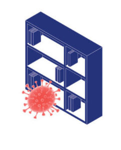
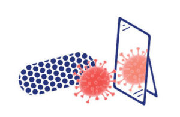
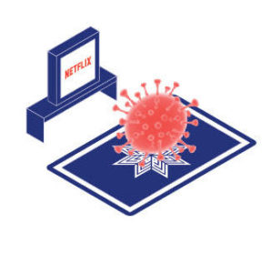

{#7} Science before Christmas

«È legittimo estrapolare dal discorso delle scienze un’immagine del mondo che corrisponda ai miei desideri?»
Italo Calvino, Lezioni americane
Cari festanti,
si avvicina l’amato e temuto periodo! Ricettacolo di ipocrisie o occasione per incontrare i cari? Momento di sobrio raccoglimento o di sfrenato consumismo? A ciascuno il suo…
Noi di ExTemporanea, approfittando del rientro a casa di molti dei nostri volontari, stiamo organizzando una festa per chiudere il percorso di Scienceground 1.5 e inaugurare quello di Scienceground 1.66666… Due giornate di attività all’insegna dell’incontro tra scienziati e scrittori, antropologi, filosofi, in cui riproporremo alcuni dei laboratori e percorsi che abbiamo condotto a Festivaletteratura, e sperimenteremo nuove forme di espressione e contaminazione. Cercando, con Calvino, la risposta impossibile alla domanda irrequieta: la scienza che stiamo producendo, è un’immagine del mondo, o un’immagine di quello che vorremmo che il mondo fosse?
Appuntamento a Bologna il 20 Dicembre (ore 15-22) e il 21 Dicembre (ore 10-22) in via Santo Stefano 43, sede della nascente associazione Alchemilla, che sta allestendo un bellissimo spazio dove stimolare e ospitare nuove contaminazioni del contemporaneo, come quella tra arti e scienze. Tieni d’occhio il nostro sito per il programma completo.
Faranno festa con noi: i redattori della rivista di critica letteraria Passaporto Nansen, gli amici di Festivaletteratura, dell’associazione Nedac, del Centro di Salute Internazionale. Il medico Chiara Bodini, il ricercatore in italianistica Mimmo Cangiano, in management dei processi culturali Luca Pareschi, in filosofia Paulo Fernando Lévano, in matematica Mattia Galeotti, in fisica Marcello Dalmonte. Un collettivo misto di grafici, artisti e musicisti: Leone Contini, Cinzia Delnevo, Damiano Fraccaro, Federico Rossini, Elisa Altan, Enrico Salvador, Nello Alfonso Marotta, Andrea De Franco, Nello Alfonso Marotta, Francesco Vedovato, Daniela Cattivelli, Mauro Martinuz, Elisa Campagnaro.
Chi porta il panettone? Questa la domanda più pressante al momento, e qui entrate in gioco voi! Ma prima di spiegarvi come potete aiutare, lasciateci raccontare come vogliamo festeggiare.
Perché scienza e arte?
La risposta migliore ce l’ha fornita il biologo evoluzionista Scott Gilbert in un’intervista che gli abbiamo fatto recentemente a Venezia:
«Sembra che gli umani non siano bravi a proiettarsi nel futuro e domandarsi cose come: “Cosa penseranno di noi i nostri discendenti? Come possiamo aiutare i nostri nipoti e i figli dei nostri nipoti?”. Gli artisti lo stanno facendo per noi, ci portano nel futuro. Come saranno le loro vite? Questo è il potere dell’immaginazione! L’artista usa la scienza per raccontare una storia. Ancora una volta, si ritorna alla narrazione: prima della conoscenza, della cognizione umana, e del linguaggio umano, io credo che ci sia l’immaginazione. Perché l’immaginazione ti permette di concepire cose che non sono ancora accadute e potrebbero anche non accadere mai, e ti porta ad agire di conseguenza.»
Qui puoi ascoltare il podcast dell’intervista in Inglese (con traduzione in italiano sul nostro sito
Listen to “It’s symbiosis, baby. Intervista a Scott Gilbert” on Spreaker.
Cosa bolle in pentola?
Oltre alle attività caratteristiche di Scienceground (laboratori, conversazioni pubbliche, momenti conviviali), vogliamo sperimentare qualche nuova intersezione.
“Tireremo le stampe” di Scienceground 1.5: un collettivo di grafici e artisti ci aiuteranno a impaginare dal vivo testi vari che raccontano l’ultima edizione di Scienceground tramite le parole degli ospiti che vi hanno partecipato: Lynn Chiu, César Henrique Giraldo Herrera, Scott Gilbert, amici e volontari di ExTemporanea. La fanzine verrà stampata in tempo reale presso la tipografia indipendente Inuit e sabato sera arriverà calda come il pane dalle rotative della Risograph dritto sulle nostre tavole imbandite a rinfresco.

Decideremo insieme la parola chiave che ci accompagnerà verso Scienceground 1.666… Dopo dati e microbi, sarà finalmente giunto il momento di parlare di boloturie? Questi cetrioli d’acqua dolce che infestano i canali felsinei sono da anni sotto attenta osservazione, come lo sono le pleonasi – enzimi eccessivamente multivalenti – e i caglioni – le particelle subatomiche coinvolte nella preparazione del formaggio. Magari tu hai una proposta migliore? Portala con te alla festa, siamo pronti a discuterla!

Sperimenteremo gli interventi artistici a cura di Nedac: la sound performance di Mauro Martinuz, Elisa Campagnaro ed ExTemporanea, la proiezione video Industrial Bay di Giuseppe Petruzzellis, e tanto altro…

Come aiutare?
Siamo felici che vi siate posti questa domanda… Abbiamo un motto, sentito in giro: da ciascuno secondo le sue possibilità, a ciascuno secondo le sue esigenze. Quindi se sei uno studentello squattrinato, risparimati il bottiglione di vinaccio e porta idee e amici. Se sei un professionista, apri il “cuore”. In particolare:
Se sei di stanza a Bologna
- Puoi offrire un letto ai volontari di ExTemporanea e ai loro ospiti: inutile spiegare che siamo simpatici, puliti, e benintenzionati.
- Vuoi portare da mangiare e/o da bere ai rinfreschi autorganizzati: ogni torta salata, tozzo di pane, tartina, succo di frutta (meglio se fermentato) è ben accetto, purché fatto con le tue mani o dalle mani di una persona di cui ti fidi: a costo di fare la figura degli snob, preferiamo lasciare i prodotti industriali sulle dispense dei supermercati…
- Devi venire alla festa!
Se pensate di contribuire ospitalità o prelibatezze, scrivete una breve mail a scienceground@festivaletteratura.it oppure chiamate il +39 3351295481 per coordinarci.
Se non potrai partecipare alla festa
In questo caso ci tocca chiederti del vil denaro, per aiutarci a tamponare l’inevitabile buco di bilancio.
Se raggiungi i 20€ di donazione ti aggiudichi il “numero zero” a tiratura limitata (250 copie) della nostra fanzine: 32 pagine di scienza e design, un lavoretto di tutto rispetto! Se poi raggiungi i 50€, oltre alla fanzine riceverai un abbraccio e molte promesse di futuri omaggi.
Qui potete fare una donazione.

Ci congediamo con il nostro microbo che guarda Netflix, forse una serie. Provocazione di uno dei nostri amici grafici: come interpretarla? E la nostra festa, sarà stata un ricettacolo di germi consumisti o un’occasione di contaminazione?
A ciascuno il suo.
ET in collaborazione con: